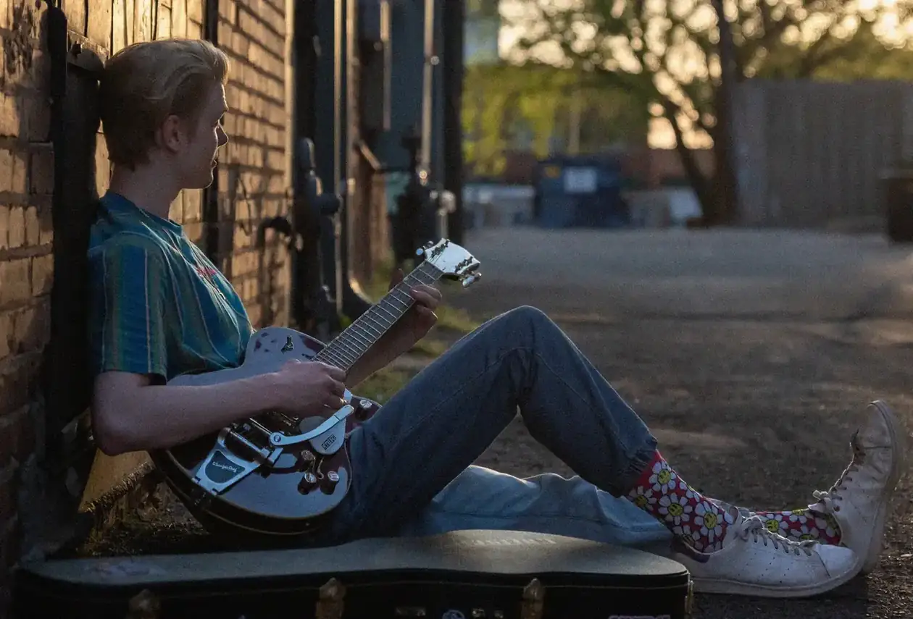

Distributing Soon
- Slack Your Rope
- Oh My Love
- Pretty, May You Please
- Is This Limerence
- Paper-God Psalm
- My Morning Star
- Lucky to Grieve

My Morning Star


For shows, press, or just to say something - reach out directly.
ashstumusic@gmail.com


"Anybody caught singin' these songs without our permission, will be
mighty good friends of ourn, cause we don't give a dern.
Publish it. Write it. Sing it. Swing to it. Yodel it.
We wrote it, that's all we wanted to do." Woody Guthrie
A True Tale of Perimortem Delirium
ReadOn a Tuesday morning in early May, I was walking to a park in Guthrie, Oklahoma, carrying a briefcase containing a book and a journal, as I have nearly everyday in 2026. The temperature was roughly 40° under a grey, clouded sky. I noticed a small bird waddling along the gravel road with me, and realized it was a young duckling. It seemed to be alone and struggling to climb the curb. Having no mature duck in sight, I thought it might need my help. “Out of the blue you came to me,” as John Lennon sang; or rather I came to it.
I saw three other ducklings further up the road, walking in a line under the bridge near Cottonwood Creek. Still no mature duck was found. I decided to carefully scoop the first duckling into my hands and reunite it with it’s assumed siblings.
Right after I set the prodigal duckling down, the group marched toward a sewer opening. I felt a horrible foresight but only watched in shock and dread, like seeing my family douse themselves in gasoline and reach for matches. In line one by one they stumbled obliviously into the black hole. Some walked straight off the edge, while others slipped through the ground-grate. I slacked my jaw and held my hands to my head, saying aloud, “What the actual fuck.”
Cars passed by, and I likely looked like an actor in a Shakespearean tragedy under that Guthrie bridge, but I never care how I’m perceived when I’m in a walking mood. I paced until I found the courage to approach what I felt was my crime scene, and to my relief, I saw all four still alive just a few feet below. I reached down the drain, retrieved them, and set them in the grass.
Fearing they would fall in again or meet an even worse fate, I refused to ignore my foresight this time. I called my mom, who was at a gas station but was soon headed my way. I emptied my briefcase to make a carrier, eventually securing all four. The last one was more energetic and took longer to find, but soon they were all bedded down beside each other with the lid cracked for air.
At home, I researched a plan while keeping them in an old box poked with air-holes and the bottom lined with cloths. When two managed to climb out, I laughed while chaotically chasing them down, eventually weighing the lid with a pillow and blanket. I read they could eat oats, worms, fine grass clippings, and eggs, though I refused the eggs because it’d make them bird cannibals. I mixed the wormy-oat-grass salad, while wishing I could afford actual waterfowl crumbs. I filled only a shallow condiment cup with water, to prevent drowning. I was not exactly stable or able to support myself at the time, but I believed they were better in this prison-sustenance-limbo than sleeping in the cold wild alone.
The next evening, I checked the box and wasn’t sure of, or couldn’t believe, what I saw. Were they sleeping? Three were lying on their backs, staring at the “sky” while slowly kicking their webs and opening their beaks. Like a child, I got my mom and said, “Come look at the ducks,” refusing to say more. I waited outside my bedroom door while she went in, but looked away.
We separated the sole survivor into a portable cat cage and left the other three in the box. Despite the approaching darkness, my mom insisted the survivor be released immediately. Feeling an untraceable guilt, I followed my leader. We circled Mineral Wells pond with the quiet duckling in the backseat, seeing only geese and hunting cats. When a goose honked, the duckling chirped back, but with no other ducks in sight, it didn’t seem safe to leave it.
We took the permanently prodigal duckling back home. Mom threw the dead three into the dumpster, unbeknownst to me. Back in my room, the survivor chirped incessantly at the mesh door. I provided fresh water and a blanket for insulation, staying up late to verify it was still well.
But I slept until 10a. When I woke, I found it curled in the corner on its back, mouth open and legs stiff. All four were now dead. After an hour, I wrapped the survivor in toilet paper and retrieved its siblings from the dumpster to do the same. I took them to the fire pit and laid them together in an iron nest, covering them with kindling and twigs.
I lit the pyre and built two more fires to ensure they were totally cremated. Finding no metal container, I scooped the ashes into a small cardboard box. Though the box wasn’t ideal, it held together as I started the walk toward Cottonwood Creek to scatter them.
With my headphones on, listening to Lennon, and my journal pinned under my arm, I passed city mowers and reached the bridge, but was short of where I planned to go. The box had held for the entire trip, but suddenly I felt it grow warmer and saw a flame emerge from a bottom corner. Reality forced me to drop the box right there on the gravel road, and I watched the flames engulf the cardboard and spill the ashes, in the same place where I had first found them.
A True Tale of Learning to Loudly Reject Sanctioned Terrorism
Read“...fathers impact their sons, once their voices have changed in puberty, [as they] invariably answer the telephone with the same locations and intonations as their fathers.” — David Foster Wallace, Infinite Jest
I was thirteen the first time I shot a deer, and it was the last time I’d ever want to. Though I had been hunting many times before, this was the first time I actually pulled the trigger. In the beginning I was very excited; having watched my dad return home so many times with conquered wild trophies, I wanted to make him proud. I was told the goal was efficiency, to make the kill as “humane” as possible.
My first few hunts were uneventful, and yet I did not feel like a loser. I remember a feeling of wonder, empowerment, and belonging, like when I first heard The Beatles, a unique warmth and fulfillment now only lingering in distant memory; we’d wake up before even the sun in some cheap hotel, eat cereal bars for breakfast, and hike deep into the brush to camp, only to ever watch, and this was awesome, this was everything I needed from hunting. But when I finally pulled the trigger, my perception of the sport became something entirely different.
My dad won a set of tickets for himself, my brother, and I, to hunt a private ranch in Cheyenne, Oklahoma. The landscape felt flat and vast like a foreign planet with beautiful mesas looming in the distance. We lived on gas station snacks and junk. In the beginning before we picked up our rifles, we drove UTVs, chased cows in a circle around their pen (which was idiotic), climbed to the top of a high mesa and looked across the whole world it seemed, then stumbled down and covered our socks with cactus thorns. We found a bull snake, and I picked it up by the head and straightened its tail so we could feel the scales. This was awesome; this was everything.
The first deer I shot and the first I killed were two different animals. Under the direction of my elder partner, I took a shot at a fawn during a storm, fearing I’d “lose” another day. It vanished into the grass, and we assumed it was dead. To my pleasure and regret, soon the storm cleared and the sun returned. Later in the evening, right after the sun went down, a buck emerged from the trees and I shot him where he stood. When we finally approached the fawn, it lifted its head from the brush.
My astonishment lasted only a second before I realized the evil of what I’d done: I missed the kill shot, and only split the baby’s stomach open. Bambi’s guts had been hanging out of her living body for at least three hours. My partner stepped in at point-blank range, and shot the terrorized young soul in her neck, ensuring she was killed at long last.
It isn’t standard to kill fawns, it’s said it’s best to let them grow into a more substantial haul of meat, but the real reason most people avoid it is because it is simply cruel. I was merely following orders at that moment, but I remain responsible for the result. When we strung up the miniature carcass and began the butchering process, I wanted to cry deeply, but I did not, because I felt I had to look strong, because that's what I'd been made to think, but that was incorrect.
“You don’t have to do that. - Silence is not a strength.” — Chris Fields, ‘Silence is not a strength’: Firefighter in Pulitzer Prize photo details struggles after OKC bombing, Abby Young, OU Daily, 2026.
I liked the beginning: the uniform, the mission, and the belonging; but I turned out to hate the ending: becoming death, destroyer of cute woodland creatures.
Out there one morning, as my dad drove the truck down a long road while I sat in the passenger seat, with a thick fog blanketing the flatland, Neil Young’s “Old Man” came over the spotty radio waves (a song about a young man seeing his whole life already lived out in someone older). My dad said he liked it, and I said I did too.
Years earlier, prepping for another hunt, we were driving to a gun range somewhere in rural Oklahoma, to tune the sights on the rifle, and he found a country station, and told me he liked to listen to old country music when he hunted. I thought nothing of it then. Now in memory, I think the songs and hunting remind him of his dad.
Years later, in his house, when I told my dad I did not want to join the U.S. military as he had long hoped, because I viewed our current foreign policy as a ‘terror machine’ and didn’t want to contribute any more than my taxes already had, he called me anti-American. We yelled for a while, circling each other with intense heat. Finally I told him I wanted him to convince me otherwise, but he didn’t. He only replied, “You need to know who you’re talking to.”
I think now I see clearly who I was talking to: He is a lot like me. We both want to climb high and look across the whole world; we both want to pick up a snake and let our family feel its scales; and we both want to belong.
But I, don’t want the blood, and have learned that the performance I thought I wanted at thirteen was a mirage. I have found a different, more ethical belonging, in the honesty of my own voice. Now I won’t be silent.
“…most people were silent.” — J. Robert Oppenheimer, The Decision to Drop the Bomb, Fred Freed, NBC News, 1965.
A True Tale of Why Short-Sighted Apes Make Losing Leaders
Read“[The Region-Oklahoma] is almost wholly unfit for cultivation, and of course uninhabitable by a people depending upon agriculture for their substance. The scarcity of wood and water, will prove an insuperable obstacle.” — Major Stephen Long, 1823
“Guitar groups are on their way out.” — Dick Rowe (Decca Records), 1962
“Netflix [is not] even on the radar screen…“ — Jim Keyes (Blockbuster), 2008
Maj. Long, Mr. Rowe, and Mr. Keyes, all spoke with a common specific flaw: they only saw value already fully realized. I’ve learned that a leader should do more than just what is easy, to yell and spit orders, to sit back and watch the prodigies, to pander to a crowd; they should do the hard things, and drop any comfortably static worldview.
I used to play baseball, just for a short time, I think because I only had losing leaders.
My first season was in Little League, but toward the end of the year, the coach fought his ex-wife’s new husband in front of the team.
I did not return to the sport until the 8th grade, which was the same year my parents divorced. At the initial meeting, the coach, hereinafter “Coach,” a man who resembled Kenny Powers, asked if I was there as a “goof”. I had no idea why he assumed, based only on my looks, that I was not taking it seriously.
I had everything the “coolest” players had, except Pit Vipers thankfully. Before practice started, my mom, although she could not easily get the money for it, bought me two bats, an outfields mitt, and the mitt I wanted most (because it had the largest pocket:) a first baseman’s.
Coach did not know, or care, about my dynamic story. Once, stopping practice in front of the boys at first base, Coach questioned me:
“What impression do you think it sends us when you show up on the first day with a first baseman’s glove?” Coach said, with the air of a man entertaining a circle of bullies who prey on weaklings.
“That I want to play first base?” I answered like the confused 13-year-old I was.
“No,” Coach replied. “It says you already do play first base”.
I was too much of a dreamer to understand what the “problem” was or what I had done wrong. He only saw immediate and easily extractable value, like Maj. Long, Mr. Rowe, and Mr. Keyes, and the other losing leaders too stupid to see the value that might exist beyond their static worldview.
“The wavin’ wheat can sure smell sweet-You’re doing fine, Oklahoma!” — Rodgers and Hammerstein, 1943
“Ladies and gentlemen, the Beatles!” — The Ed Sullivan Show, 1964
“Blockbuster files for Chapter 11 bankruptcy.” — The Wall Street Journal, 2010
Coach quit or was fired my 9th-grade year. I only played football that year, and Coach showed up to an early home game wearing his new school’s merchandise head to toe (perceived by many as only a pathetic cry, the act of a washed-up failure who was once treated like a slave, and hates the life he settled with, so he inflicts his inner darkness onto those adolescents in whom he sees a soul, and seeks the attention of the very adolescents he needs to spite.)
I was not the best athlete, or the best on my 8th grade JV baseball team; all I wanted was for someone to show me how to play first base, to be more than a losing leader.
Ash Stu
Outsider-folk singer-songwriter from Guthrie, Oklahoma, formerly known as Ashton Stubblefield.
A figment of my own imagination.


.webp)